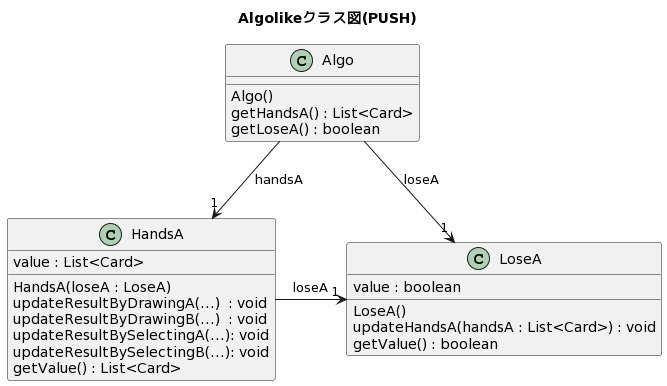

課題D1では，Algolike の HandsA から LoseA へのデータ転送について見ていきます．
HandsA は，プレイヤーのすべての手札を管理しているクラスで，LoseAは各ターンでプレイヤーがゲームに負けたか否かを表すクラスです．
この課題では，
「HandsA の情報が更新されたときにその情報を LoseA にPULL型で転送しているプログラムを，PUSH型で転送するようにリファクタリングすること」を目的とします．
以下では，リファクタリングに要した時間を測っていただきますので，お手元に時計をご用意ください．
時間計測にあたって，急いで作業していただく必要はまったくありません．
最初の課題から最後の課題まで一定のペースを保てるよう, 正しくリファクタリングを行うことを意識してください．
この課題で作業していただく内容は，
「HandsA の情報が更新されたときにその情報を LoseA にPULL型で転送しているプログラムを，PUSH型で転送するようにリファクタリングすること」です．
まず，現時点での HandsA から LoseA へのデータ転送に関するクラス図とシーケンス図を以下に示します．
現時点ではPULL型のデータ転送で実装されているため，LoseA クラスの getValue() メソッドから HandsA クラスの getValue() メソッドを呼び出すために LoseA クラスが HandsA クラスを参照しています．
ここで Algo クラスは，初期化時に HandsA クラスや LoseA クラスのインスタンスを生成し，それらのインスタンスを関連付ける役割を担っています．
また，HandsA クラスや LoseA クラスにアクセスするための入口（Facade）としての役割も担っています．
これを，以下のクラス図とシーケンス図に示すようなPUSH型のデータ転送になるよう，手作業でリファクタリングを行っていただきます．

今度はPUSH型のデータ転送であるため，HandsA クラスの updateResultBy...() メソッドから LoseA クラスの updateHandsA() メソッドを呼び出すために HandsA クラスが LoseA クラスを参照していることに注意してください．
リファクタリングの作業手順の詳細を以下に示します．
作業に着手する前に，メッセージでお伝えした自分専用のブランチ（user??）を切って，一度プッシュを行ってください．
プッシュを行った後，開発環境の準備ができれば，時間計測を開始してください. 時間計測はできる限り，1分以内の単位での計測をお願いします.
テストプログラムが正しく動作するまでは作業完了とは見なされないので注意してください．
リファクタリングの作業が完了したら作業時間を記録し，その後，作業結果を自分専用のブランチにコミット＆プッシュしてください．
ただし，main ブランチには決してマージをしないように，また自分専用のブランチを決して削除しないように注意してください．
プッシュ後に，以下のアンケートにお答えください．
アンケート回答